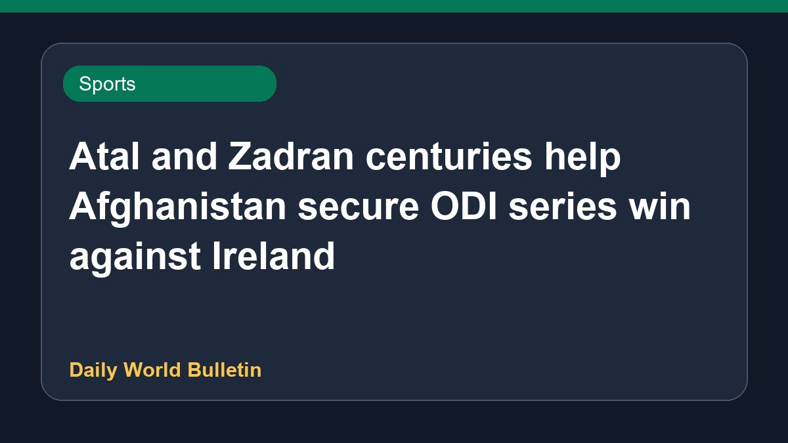

Atal and Zadran centuries help Afghanistan secure ODI series win against Ireland

Centuries by Atal and Zadran enabled Afghanistan to defeat Ireland by 42 runs in the fourth ODI, securing the series victory during their tour in 2026. Afghanistan posted a record one-day international total in the match. Additionally, this win confirmed Afghanistan's spot for the 2027 World Cup, while West Indies are set to play in the qualifiers.
Original source: Sports News Sources
Atal, Zadran tons help Afghanistan secure series win - Cricbuzz ↗
Atal, Zadran tons help Afghanistan secure series win - Cricbuzz ↗